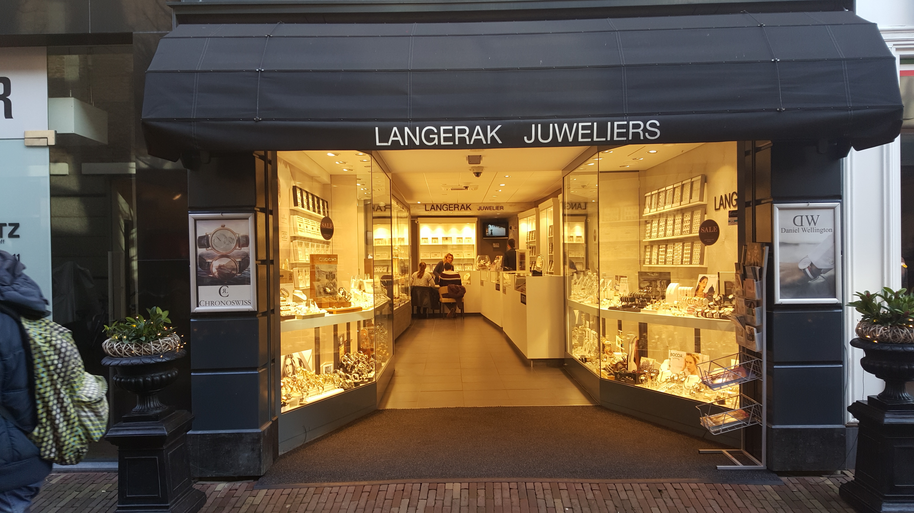
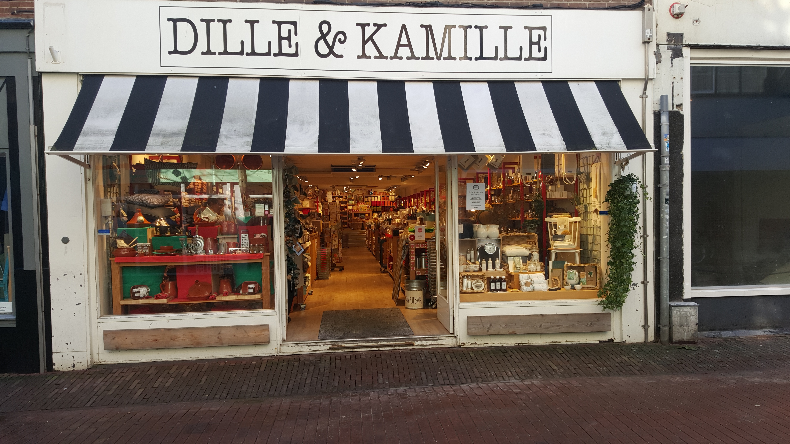

Specialty store's

Since 1966 Juwelier Langerak is a wel known jewelry store in Haarlem and is known for the big collection of jewelry, but most of all for the friendliness, hospitality and good service.
Because of the many brands and diverse products, we have jewelry for all ages.
Besides the many brands, there also is a large collection in gold and silver.
Due to this large measure of products, it will not often occur that this store won't fulfill your needs.

Bij Saar Thuis is a Family Lifestyle store.
Bij Saar Thuis sells beautiful clothing and accessories for in the house, but also for the wife, the husband and of course the children.
At Bij Saar Thuis you are at the right adress for beautiful and colorful bags, scarves, unique shawls, boots, beautiful accessories and jewelry.

De wereld van Jansje is a surprising giftshop, lunchroom and a webshop with a beautiful collection of durable products from around the world and where Fair Design is central.
From hip oil cans to vintage jewelry, recycle, upcycle, hip and unique.
Everything is designed and produced from social involvement.
At Jansje there work involved and educated people with a disability.
In the store and our lunchroom you're always welcome.

Most articles of Dille & Kamille Haarlem are made of natural materials like wood, pottery and cotton.
Step into the shop and know you are surrounded by rugged simplicity.
Here you can find all things for the house, kitchen and garden.
Wander around between the wooden ladles, pepper and salt pairs, teas, flower pots, cutting boards and many more things.
Classical music and the delicious smells coming from dozens of soaps and candles, make it complete.
re p

Jasmijn bloembinders has an extensive range of flowers and plants. Roses from Ecuador, tulips from France and the most beautiful orchid species.
The're also specialized in a fine collection of silk flowers and plants, that look just like real plants.
Furthermore Jasmijn Bloembinders has a large collection of beautiful vases, accessories, candles, antiques and various other products of renowned studios to show a model that looks like it could be your own home.
That's how Jasmijn Bloembinders has something for everyone.
The shop regularly changes color, collection and set up so it seems that you enter a new world again and again.

Biljartservice W. van den Broek is specialized in make and sale of pool cue's. But also other biljart products are sold in this specialty shop.
So you can go there for biljartballs, chalk and storage bags.
At Biljartservice W. van den Broek you also can find dart boards and darts.
Everything you can have to play your favorite sport, you can get at Biljartservice W. van den Broek in the Zijlstraat in Haarlem.